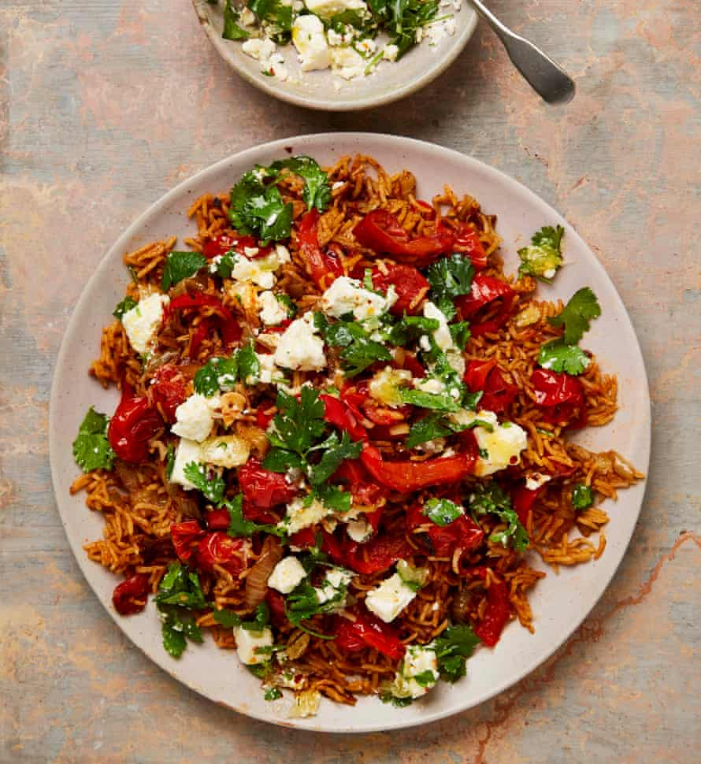

Red rice with feta and coriander

This is a very popular dish in our house, especially with the kids. If I’m serving it with something substantial such as chicken, I omit the feta topping and serve it with just a squeeze of lemon juice.
Put a large saute pan for which you have a lid on a high heat. Once very hot, add the cherry tomatoes and sear for five minutes, shaking the pan occasionally, until they are nicely charred. Transfer the tomatoes to a bowl and set the pan aside to cool down a little.
Return the saute pan to a medium-high heat, add 75ml oil, followed by the peppers, onions, a teaspoon and three-quarters of salt and a good grind of pepper. Cook for seven minutes, stirring occasionally, until softened, then add the garlic and cook for three minutes more, until the vegetables have taken on some colour. Add the tomato paste, sugar and spices, cook, stirring, for 90 seconds, then add the rice and charred tomatoes and stir everything together. Pour in 750ml boiling water, cover the pan and put on the lowest heat for 15 minutes. Turn off the heat and leave the pan to one side, still covered, for 10 minutes.
Top and tail the lemon, then use a small knife to remove the skin and white pith. Holding the lemon above a bowl to catch the juices, cut between the membranes to release the segments, then cut each segment into three. Put the lemon flesh in the bowl with the juice, then mix in the feta, the remaining oil, coriander and chilli flakes (if using). Spoon half the lemon and feta mix over the rice, and serve the rest alongside.